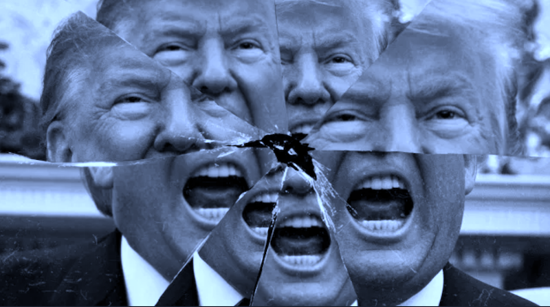

2020-11-04 08:00

The way many viewed the 2020 elections, it was supposed to be a referendum on Trump’s handling of the COVID-19 virus. Instead it turned out to be a referendum on how much Americans care about the lives of their neighbors and children, racial justice, science, and democracy.
Well, we don’t.
That such significant numbers of people voted for white supremacists, QAnon wingnuts, and xenophobes showed that Trump correctly grasped how much Americans worry about criminality, fascism, and corruption in their electeds.
Again, we don’t.
An editorial in last night’s Tageszeitung hit the nail on the head when it pointed out that not only do Americans not care, “they know exactly what they’re doing.” Trump voters knew full well last night that they were burning down the house with everyone in it. And that there would be no survivors.
But this is who we are. Trump didn’t burn down the house. White American did.
Democratic pollsters told us that America needed a steady voice from the “middle.” It turned out their prescriptions were no better than their polling. Pinning all their hopes on Biden’s character and promising a reset to the halcyon days of 2008 backfired on Democrats. in the end Biden’s only strategy was running on Trump’s COVID failures. It wasn’t enough.
After the death of 3,000 people in 911, Americans were ready to invade the world, gut their own Constitutional protections, seal the border, and then bring their foreign wars back to America’s cities. But now, with a quarter of a million deaths directly attributable to Trump’s denials and sabotage, there is barely a peep of outrage from his supporters. The Coronavirus is just the flu and, anyway, Trump’s not responsible, China was. No, America hit an iceberg and we just have to throw women and children overboard and crowd as many billionaires into the lifeboats as we can.
One obvious takeaway from this election is that it was less a referendum on Trump’s corruption and impunity — which Americans obviously admire — than on the Democratic Party’s inability to offer something different. The DNC’s idea of “new” was a 78 year-old with hair plugs and dentures. A piece of meatloaf from the ice box with just a hint of freezer burn.
It may be hours or days until we know who won the election. I don’t share the view that both candidates were equally terrible. Trump is a fascist. If he wins, or the presidency is handed to him by the Supreme Court (for the 3rd time in my life), it will be the final nail in the coffin of our ersatz democracy. If Biden manages to prevail, Lady Democracy will still be on life support, her funeral delayed but relatives encouraged to book quick flights to visit her while she moves in and out of consciousness. Still, it’s the better option.
But the greatest lesson of this election for me was that White American may not vote their interests but we certainly vote for people who look like ourselves. Time after time the white voter looks into the mirror and refuses to see the ageing, racist sociopathic bully on the other side of the glass — yet each time he invariably looks like Donald Trump.